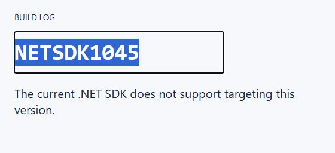
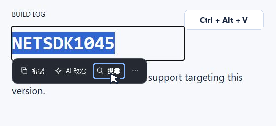

Stop carrying text between apps
To look up a phrase, you copy it, find the input field, and paste. SnapBar’s search and dictionaries use the text you already selected.
TEXT-SELECTION TOOLBAR FOR WINDOWS
Select text on Windows, press Ctrl + Alt + V, then click Search. Your browser opens with the words you selected.
Portable ZIP · .NET included · Unsigned preview





Like this workflow? ⭐ Star SnapBar on GitHub
SnapBar default Highlight → Press Ctrl + Alt + V → Click Search
To look up a phrase, you copy it, find the input field, and paste. SnapBar’s search and dictionaries use the text you already selected.
Looking up a word in another tab means finding your place again. Import a StarDict dictionary and choose Dictionary to see the definition beside the sentence.
See an error code in docs or notes? Highlight it, bring up SnapBar, and click Search. Your browser opens with the same error code as the query.
READING · OFFLINE DICTIONARIES
Select an English word or short phrase and choose Dictionary. Read definitions beside your selection, search several dictionaries at once, and copy a definition into your notes.
Lookups run locally without a connection. Import your own supported StarDict dictionaries first; enable, disable or remove each one separately.
A sentence you’re reading
Make room for serendipity.
/ˌser.ənˈdɪp.ə.ti/
The chance discovery of something good when you weren’t looking for it.
WRITING · AI REWRITE · OPTIONAL
Select your draft and open AI rewrite from SnapBar’s More menu. Compare the original and result, keep refining, then copy it or replace the original when the source is editable and passes revalidation.
Set up your own AI service, model and any required API key. Provider charges may apply. Selected text is sent only when you run an AI instruction.
Illustrative result. Compare it with your draft before deciding to use it.
CAPTURE · LOCAL OCR
Words stuck in an image or on screen? Start region OCR from the tray menu or set a dedicated shortcut. Capture an area on one screen, then correct, copy or search the text, or use your configured actions.
Traditional Chinese and English recognition runs locally, with images processed in memory. OCR requires the Microsoft Visual C++ x64 runtime. Search and AI actions send text to their respective services.
把靈感留下來。
Keep the idea.
RECOGNIZED · EDITABLE TEXT
把靈感留下來。
Keep the idea.
MAKE IT YOURS
From one less copy command to connecting your own tools, make SnapBar fit the way you work.

ONE LESS STEP
Enable automatic toolbar display and adjust its delay. Or enable automatic copying, either when selecting with Ctrl held or whenever you select text.
Automatic copying is off by default and can be configured separately from the toolbar.
YOUR ACTIONS, CLOSER
Reorder actions, pin up to nine, and choose icons or icons with text. Assign shortcuts to search, dictionary, OCR, a specific AI command or a custom action.
Dictionary and AI actions still need their respective setup.
CONNECT YOUR TOOLS
Set a custom search URL or add URL, PowerShell and JavaScript actions to pass selected text to your own tools.
JavaScript requires Node.js. Scripts run with your current Windows user permissions.
START WITH ONE SIMPLE ACTION
Open SnapBar and follow the built-in practice guide to send your first selection to search. Search is ready to use out of the box.
Windows x64 · .NET runtime included · Unsigned package
Region OCR also requires the Microsoft Visual C++ x64 runtime. Check release notes for the features in your downloaded build.
View published releases · All releases ↗
Keep all ZIP contents together, including Probe and language folders.
Run SnapBar.App.exe. Your first manual launch opens the practice text.
Select the practice text, press the shortcut shown (default: Ctrl+Alt+V), then choose Search. It may be under More.
Already using SnapBar? Choose Quit SnapBar from its tray menu before extracting and starting the new version. Saved preferences and AI keys are reused for the same Windows account. Check release notes for the features in your downloaded build.
Manual activation with Ctrl+Alt+V is the initial default. Open settings from the system tray and check the shortcut under General, or reopen the practice guide under About & Support → Getting started. Selection support varies between apps.
Enable automatic toolbar display under General. Then drag or double-click to select text.
No. SnapBar stays in the system tray. Click its icon to return, or choose Quit SnapBar to exit completely.
In bilingual builds, General → Language offers System, Traditional Chinese and English. New installations follow Windows display language, falling back to English for unsupported languages. Existing installations keep Traditional Chinese. Already-open editor and result windows change language when reopened.
Configure your own provider, model and any required API key first. Provider charges may apply. Copy and Search work independently of AI.
Read-only or uncertain sources do not allow replacement. SnapBar revalidates the original window and selection before writing. Selection support varies between apps.
Reorder and pin toolbar actions, set a custom search URL, or add URL, PowerShell and JavaScript actions. JavaScript needs Node.js; scripts run with your Windows user permissions. See all features and setup instructions ↗